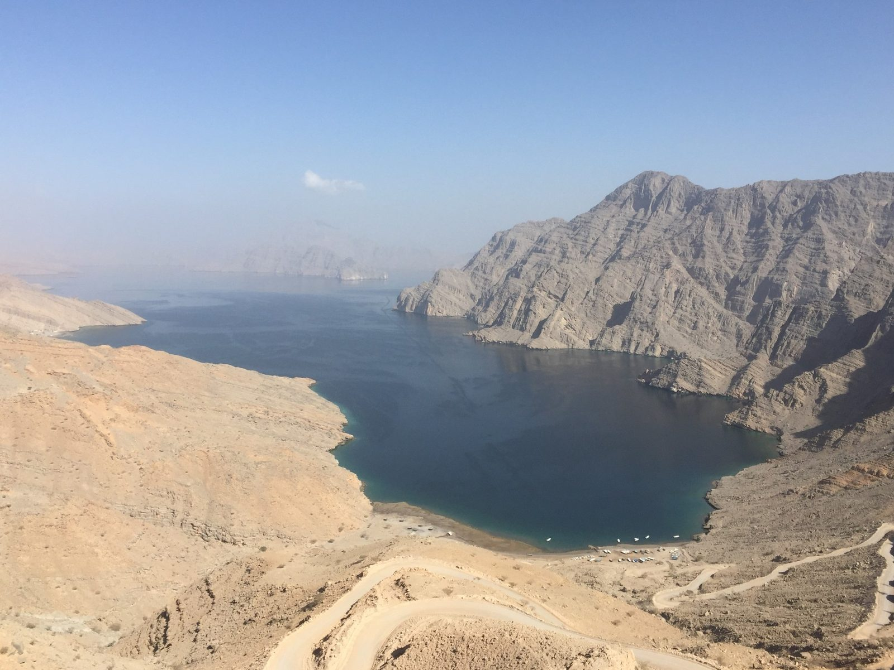

Estrecho de Ormuz
Irán afirma que tres petroleros escoltados por EE.UU. chocaron con minas en Ormuz, un relato que las agencias no pudieron verificar
La Guardia Revolucionaria dijo que los buques se incendiaron en el estrecho, pero EFE y Reuters no lo confirmaron de forma independiente. La UKMTO informó, en paralelo, que tres embarcaciones fueron alcanzadas el lunes por proyectiles no identificados y siguieron su rumbo, con toda la tripulación a salvo. Teherán ordenó endurecer el cierre y el petróleo tocó mínimos de tres meses antes de rebotar.

Un comunicado iraní, sin bandera ni confirmación independiente
La Armada de la Guardia Revolucionaria de Irán informó este martes de que tres petroleros “escoltados” por Estados Unidos se incendiaron tras chocar contra minas navales en el estrecho de Ormuz. El comunicado, recogido por la agencia Tasnim y difundido por EFE, ubicó un buque en las costas meridionales y los otros dos al este del estrecho, bajo escolta aérea estadounidense. No precisó banderas, daños ni víctimas. EFE no pudo verificar de forma independiente esa versión.
Reuters, desde Dubái, recogió otro comunicado de la Armada iraní según el cual dos petroleros chocaron contra minas a primera hora del martes; tampoco lo confirmó. Las cifras no coinciden y no había, al cierre, identificación pública de los barcos. En paralelo, la oficina británica de Operaciones de Comercio Marítimo (UKMTO) publicó el aviso 219-26, con incidente del 23 de noviembre a las 20.25 UTC: tres embarcaciones alcanzadas por proyectiles no identificados rumbo al este. Los buques siguieron y toda la tripulación fue contabilizada. Reuters reprodujo el parte. El documento no habla de minas ni atribuye autoría. No es posible afirmar que se trate del mismo episodio denunciado por Teherán.
Teherán ordena cerrar más el estrecho
El comandante en jefe del Ejército iraní, el mayor general Amir Hatami, ordenó a su Marina reforzar cada día el bloqueo del estrecho hasta que Washington acepte las condiciones de Teherán, según Euronews. “Hasta que se cumplan las siete condiciones de la República Islámica de Irán, no solo no se abrirá el estrecho de Ormuz, debe cerrarse más cada día”, dijo, y advirtió que si Estados Unidos “inicia otra guerra” los golpes “serán más graves, más aplastantes y sin limitación geográfica”. Reuters recogió el martes una declaración suya en el mismo sentido: la vía “se cerrará cada vez más y las condiciones serán más difíciles para el enemigo”.
EFE precisó que Irán se dice dispuesto a reabrir el estrecho en horas si Washington acepta el levantamiento de las sanciones, el fin del bloqueo naval, la liberación de fondos congelados y el fin de la guerra en todos los frentes, incluido el Líbano. El despacho situó estos hechos casi nueve meses después del inicio de la guerra y señaló que la mediación sigue sin resultados.
El tráfico, las escoltas y una mediación todavía frágil
El cierre que anuncia Teherán no equivale a una vía vacía. El Centro Conjunto de Información Marítima (JMIC) registró, del 19 al 21 de noviembre, 114 tránsitos por el estrecho “con la asistencia de Estados Unidos” y dijo que las afirmaciones sobre petroleros que habían chocado con minas no estaban confirmadas, según Euronews. Entre el 1 y el 22 de noviembre, la UKMTO publicó 20 avisos de incidentes en Ormuz, el golfo Pérsico y el golfo de Omán, 17 clasificados como ataques, de acuerdo con EFE.
Donald Trump aseguró el domingo que Irán había lanzado en la última semana más misiles y drones que en cualquier otro momento en más de un año, interceptados sin daños, según EFE, y que los ataques militares contra Irán podrían reanudarse después de Año Nuevo, según Euronews. El primer ministro de Qatar, Mohammed bin Abdulrahman Al Thani, se reunió el lunes en Washington con el secretario de Estado, Marco Rubio, y el vicepresidente, JD Vance. Tras hablar con Rubio, afirmó que la región “no puede soportar una nueva escalada de tensiones entre Estados Unidos e Irán”, según Euronews. Associated Press, citada por ese medio, indicó que el encuentro con Vance duró unos diez minutos.
El crudo tocó mínimos de tres meses y después rebotó
Según Reuters, a las 09.15 GMT de este martes el Brent bajaba 0,75 dólares (0,8%), hasta 89,62 dólares el barril, tras tocar su nivel más bajo desde el 27 de agosto. El West Texas Intermediate (WTI) cedía 0,64 dólares (0,8%), hasta 79,53 dólares, su cota más reducida desde el 10 de agosto. Más tarde, CNBC informó que, a las 9.38 de la mañana en la costa este de Estados Unidos, el Brent subía 1,3% a 90,55 dólares y el WTI avanzaba 1,4% a 81,29 dólares, con riesgos persistentes para el tráfico por Ormuz y señales de mayor oferta. El analista de UBS Giovanni Staunovo, citado por Reuters, atribuyó la presión bajista a que el mercado descuenta parte del riesgo geopolítico de corto plazo y a las liberaciones de reservas estratégicas. CNBC recogió un informe de Deutsche Bank según el cual los inventarios globales observados de líquidos subieron en octubre, lo que implica un excedente de 1,7 millones de barriles diarios.
El cuello de botella, con datos de antes de la guerra
La Administración de Información Energética de Estados Unidos (EIA), en un informe actualizado el 3 de marzo de 2026, estimó que en el primer semestre de 2025 transitaron por Ormuz 20,9 millones de barriles diarios de petróleo, alrededor del 20% del consumo mundial de líquidos petroleros y un cuarto del comercio marítimo global. Son datos previos a la guerra en curso, no el volumen actual. El 89% del crudo y el condensado de ese semestre tuvo como destino Asia; China, India, Japón y Corea del Sur concentraron el 74%. También cruzaron 11.400 millones de pies cúbicos diarios de gas natural licuado, más del 20% del comercio mundial de GNL, en su mayor parte procedente de Qatar. Si la vía se cierra, advirtió la EIA, las alternativas solo cubrirían una parte: los oleoductos Este-Oeste de Saudi Aramco y el de Abu Dabi, en los Emiratos Árabes Unidos, suman unos 4,7 millones de barriles diarios.
El tablero de este martes sigue incompleto: un reclamo iraní de minas que las agencias no verificaron, un aviso británico de proyectiles sobre tres buques que siguieron navegando y un mercado que, pese al riesgo, encontró en la oferta un contrapeso transitorio.
Fuente
EFE (despacho del 24/11/2026, recogido por Infobae) · Reuters (24/11/2026, incluidos despachos desde Dubái y sobre el mercado petrolero) · Euronews (24/11/2026) · United Kingdom Maritime Trade Operations (UKMTO), aviso 219-26 del 24/11/2026 · Administración de Información Energética de Estados Unidos (EIA), “World Oil Transit Chokepoints”, actualización del 3/3/2026 · CNBC (24/11/2026) · Associated Press, citada por Euronews · Elaboración: InfoDataGGM